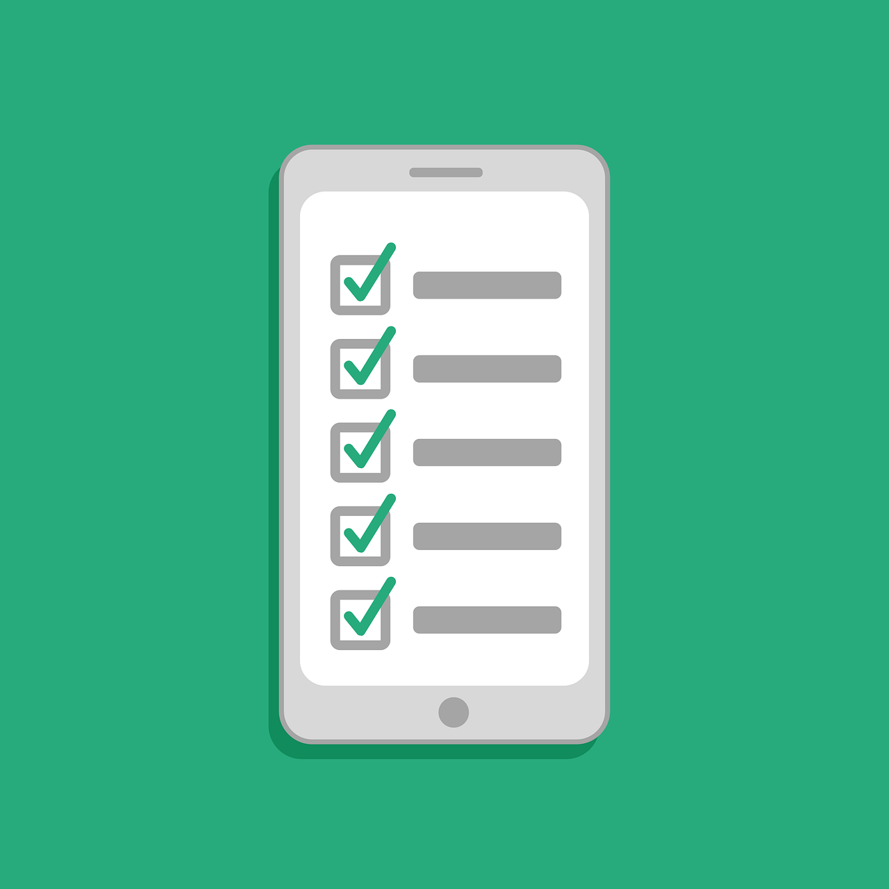
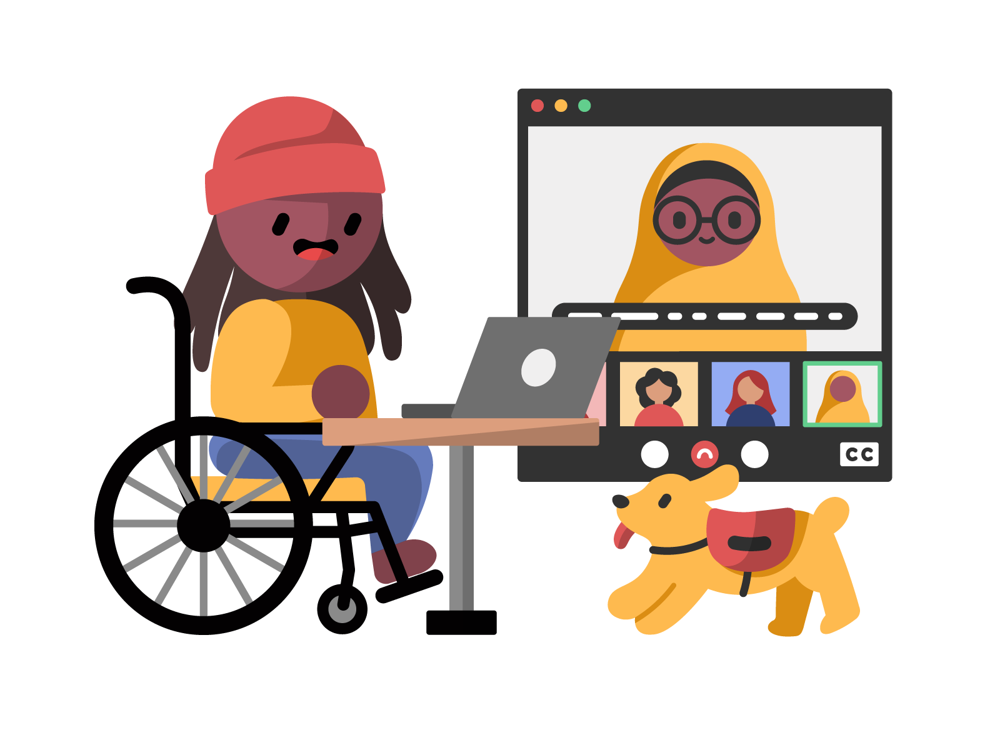

For reasons of clarity and usability, it should not be too busy or complicated.

Touch-friendly
To make it easy to use on tablets and smartphones.
Standards-compliant
Because adherence to web standards is the best way to ensure a web app is accessible to the broadest range of users.

Illustration by Dana Chan for
Disabled And Here.
Other considerations for a good checklist app include:
Responsive design
Trackable over time as data
Tested for compatibility with multiple different desktop & mobile browsers
Why I created this web page
I created this web page as my final project for the University of Michigan's Coursera course called Introduction to HTML5. And to begin thinking about my final project for the Harvard online course called CS50x.